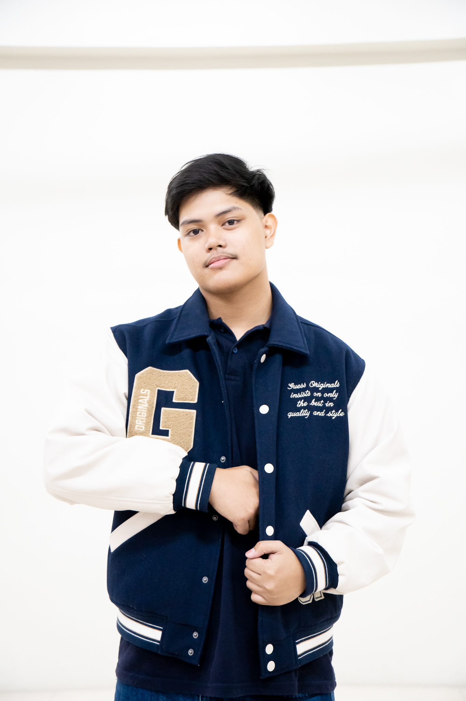

Bench Calvin Paed
Computer Engineering Student
Bench Calvin P. Paed is a dedicated third-year Computer Engineering student at University of the East, recognized for consistent academic excellence and a rigorous approach to technical studies. Driven by a deep curiosity about how technology operates from the inside out, he excels across a challenging curriculum, focusing on core areas such as Hardware-Software Integration, Digital System Design, and Software Engineering Principles.
Beyond high academic performance in the classroom, he actively applies theoretical knowledge through hands-on engineering projects and collaborative problem-solving. Constantly seeking opportunities to expand technical expertise, he is committed to continuous learning and aspires to leverage computer engineering to develop innovative solutions for real-world technology challenges.